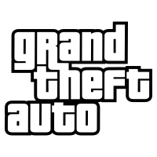

Grand Theft Auto (GTA) é uma série de jogos eletrônicos de
ação-aventura criada por David Jones e Mike Dailly, sendo
posteriormente gerenciada pelos irmãos Dan e Sam Houser, Leslie
Benzies e Aaron Garbut. A maioria dos jogos foi desenvolvida pela
Rockstar North (antiga DMA Design) e publicada pela Rockstar
Games. O nome da série é um termo policial utilizado nos Estados
Unidos para identificar roubos de automóveis: Grand Theft
refere-se a furtos de valor elevado (maior que US$ 400,00) e Auto
designa os automóveis. O nome desse crime, no Brasil, é Roubo
Qualificado de Automóveis e em Portugal designa-se por carjacking.
A jogabilidade foca em um mundo aberto onde o jogador pode
completar missões para progredir em uma história geral, bem como
engajar em várias atividades secundárias. A maior parte da
jogabilidade gira em torno de dirigir e atirar, com ocasionais
elementos furtivos e role-playing. A série também tem elementos
dos jogos beat 'em up anteriores da era de 16 bits. Os jogos da
série Grand Theft Auto se passam em locais fictícios modelados a
partir de cidades da vida real, em vários momentos, do início
dos anos 1960 até a década de 2010. O mapa do jogo original
englobava três cidades—Liberty City (baseada em Nova York), San
Andreas (baseada em São Francisco) e Vice City (baseada em
Miami)—mas títulos posteriores tendem a focar em apenas um
cenário e expandir os três locais originais. Cada jogo da série
centra-se em diferentes protagonistas que tentam ascender no
submundo do crime devido a vários motivos, muitas vezes
acompanhando temas de traição. Vários veteranos do cinema e da
música deram voz a personagens nos jogos, incluindo Ray Liotta,
Dennis Hopper, Samuel L. Jackson, William Fichtner, James Woods,
Debbie Harry, Axl Rose e Peter Fonda.

Logo do Jogo Grand Theft Auto (GTA)
A DMA Design iniciou a série em 1997, com o lançamento de Grand
Theft Auto. Atualmente, a série consiste em sete títulos
principais e quatro pacotes de expansão. O terceiro título
principal, Grand Theft Auto III, lançado em 2001, é considerado um
jogo revolucionário e levou a série para um ambiente
tridimensional pela primeira vez, tendo os títulos subsequentes
seguido esse formato. Os jogos influenciaram outros jogos de mundo
aberto e levaram ao rótulo de clone de Grand Theft Auto em títulos
similares.
A série é aclamada pela crítica, com todas as principais entradas
em 3D da franquia frequentemente classificadas entre os maiores e
mais vendidos videogames da história; já vendeu mais de 405
milhões de unidades, tornando-se uma das franquias de videogame
mais vendidas, assim como um dos produtos de entretenimento mais
rentáveis da história, arrecadando com seu sétimo título principal
quase um bilhão de dólares nas primeiras 24 horas de lançamento.
Bateu também vários recordes no Guinness Book, inclusive como o
jogo de ação de videogame a alcançar o maior valor em vendas em 24
horas. Em 2006, Grand Theft Auto foi incluído em uma lista de
ícones do design britânico no Great British Design Quest
organizado pela BBC e pelo Design Museum. Em 2013, o The Telegraph
classificou Grand Theft Auto entre as exportações de maior sucesso
do Reino Unido. A série também tem sido polêmica por sua natureza
adulta e temas violentos, bem como pelo conteúdo cortado.
A franquia Grand Theft Auto é dividida em universos fictícios
paralelos, nomeados após o nível primário de recursos gráficos
usados em cada época. O primeiro Grand Theft Auto, suas expansões e
sua sequência fazem parte do "universo 2D". Grand Theft Auto III e
suas sequências são consideradas do "universo 3D", enquanto Grand
Theft Auto IV, suas expansões e Grand Theft Auto V são considerados
o "universo HD". Cada universo é considerado paralelo apenas para
marcas, nomes de lugares e personagens de plano de fundo
compartilhados entre eles.
Grand Theft Auto, o primeiro jogo da série, foi lançado para
Microsoft Windows e MS-DOS em outubro de 1997, portado para
PlayStation em 1998 e para Game Boy Color em 1999. Grand Theft Auto
2 foi lançado em 1999 para Microsoft Windows e, mais tarde, recebeu
portes para PlayStation, Dreamcast e Game Boy Color.
O PlayStation 2 também contou com três jogos da série principal,
todos relançados em várias plataformas; um acordo entre a Take-Two
Interactive e a Sony Computer Entertainment resultou em uma
exclusividade temporária para PlayStation 2, antes de receber portes
para Microsoft Windows e Xbox. O título de 2001, Grand Theft Auto
III, mudou de gráficos bidimensionais (2D) usados nos dois
primeiros jogos, para gráficos tridimensionais (3D). Grand Theft
Auto: Vice City foi publicado em 2002 e foi o primeiro a apresentar
um protagonista que fala, dublado por Ray Liotta. Grand Theft Auto:
San Andreas, lançado em 2004, introduziu vários novos elementos,
incluindo personalização de personagem e um mapa mais extenso que
abrange três cidades e áreas rurais circundantes.
Dois jogos da série principal foram publicados para PlayStation 3 e
Xbox 360. O título de 2008, Grand Theft Auto IV, focou-se no
realismo e nos detalhes, removendo vários recursos de personalização
e adicionando um modo multijogador online. Grand Theft Auto V,
publicado em 2013, contou com três protagonistas jogáveis. Foi
lançado com um enorme sucesso financeiro, quebrando vários recordes.
Mais tarde, foi relançado em 2014 para PlayStation 4 e Xbox One e em
2015 para Microsoft Windows. O jogo foi relançado novamente para o
PlayStation 5 e o Xbox Series X/S em 15 de março de 2022.
Em fevereiro de 2022, a Rockstar confirmou que o desenvolvimento de
um Grand Theft Auto VI estava "bem encaminhado". Em setembro de
2022, ocorreu um vazamento de um arquivo de 3 GB de 90 vídeos
mostrando vídeos e imagens em desenvolvimento do jogo; o jornalista
da Bloomberg News, Jason Schreier, confirmou com fontes da Rockstar
que estes eram legítimos. O hacker alegou possuir o código-fonte,
recursos e compilações internas do novo jogo e de Grand Theft Auto
V. A Take-Two respondeu enviando takedowns em alguns vídeos postados
no YouTube. A Rockstar afirmou que o vazamento foi resultado de uma
invasão de rede em seus sistemas, mas não prevê que isso afetará seu
processo de desenvolvimento.
Em novembro de 2023 foi anunciado oficialmente que Grand Theft Auto
VI será lançado para os consoles de nova geração em 2025, ainda sem
uma data definida. A divulgação do trailer foi forçada após um
vazamento não oficial, que forçou a Rockstar disponibilizar o vídeo
antes do previsto. No trailer conhecemos melhor a personagem Lucia
enquanto observamos o caos moderno de Vice City.
Grand Theft Auto gerou vários jogos adicionais e pacotes de
expansão. Em 1999, o jogo original recebeu dois pacotes de expansão:
Grand Theft Auto: London, 1969 e Grand Theft Auto: London, 1961.
Grand Theft Auto Advance, lançado em 2004 para Game Boy Advance,
apresenta uma perspectiva de cima para baixo. Três jogos foram
lançados para PlayStation Portable (PSP). O jogo de 2005, Grand
Theft Auto: Liberty City Stories, é uma pré-sequência de Grand Theft
Auto III, enquanto o jogo de 2006, Grand Theft Auto: Vice City
Stories, é uma pré-sequência de Vice City; os dois jogos foram
posteriormente portados para PlayStation 2. Em 2009, Grand Theft
Auto: Chinatown Wars foi lançado para Nintendo DS e, posteriormente,
portado para PlayStation Portable. Em 2009, The Lost and Damned e
The Ballad of Gay Tony foram lançados para Xbox 360 como pacotes de
expansão para Grand Theft Auto IV; uma "aliança estratégica" entre a
Rockstar e a Microsoft resultou em uma exclusividade temporária.
Mais tarde, eles foram lançados para Xbox 360, PlayStation 3 e
Microsoft Windows como parte de uma compilação, intitulada Grand
Theft Auto: Episodes from Liberty City.
Inúmeros títulos da série receberam portes para dispositivos móveis.
Nos seus décimos aniversários, Grand Theft Auto III e Vice City
foram relançados para iOS e Android em 2011 e 2012, respectivamente.
Em 2013, San Andreas foi portado para iOS, Android e Windows Phone;
o porte mobile foi posteriormente relançado para Xbox 360 em 2014, o
ano do décimo aniversário do jogo, e no ano seguinte para
PlayStation 3. Chinatown Wars foi lançado para iOS em 2010 e para
Android e Fire OS em 2014. Em 2015, Liberty City Stories foi portado
para iOS, Android e Fire OS. A coletânea remasterizada Grand Theft
Auto: The Trilogy – The Definitive Edition, que contém Grand Theft
Auto III, Vice City e San Andreas, foi lançada para Android e iOS no
primeiro semestre de 2022, e posteriormente para PlayStation 4,
PlayStation 5, Xbox One, Xbox Series X/S e Nintendo Switch,
substituindo os jogos originais das suas respectivas lojas digitais.
Grand Theft Auto Double Pack é uma compilação que inclui Grand Theft
Auto III e Vice City e foi lançado em 2003 para PlayStation 2 e
Xbox. Grand Theft Auto: The Trilogy é uma compilação de Grand Theft
Auto III, Vice City e San Andreas. A compilação foi lançada pela
primeira vez em 2005 para Xbox. Mais tarde, foi lançado para
PlayStation 2, Windows, Mac OS X e PlayStation 4. The Trilogy também
serviu como um pacote revisado de San Andreas, que tinha que ser
retirado das prateleiras devido ao controverso mod Hot Coffee. Um
rumor em agosto de 2021 sugeriu que a Rockstar Dundee estava
desenvolvendo uma versão remasterizada da trilogia, usando a Unreal
Engine; após alguns vazamentos, a Rockstar oficialmente anunciou
Grand Theft Auto: The Trilogy – The Definitive Edition no dia 8 de
outubro de 2021. A coletânea, desenvolvida pela Grove Street Games,
possui melhorias gráficas e de jogabilidade, e substituiu as versões
existentes nas lojas digitais. Ela foi lançada para Microsoft
Windows, Nintendo Switch, PlayStation 4, PlayStation 5, Xbox One e
Xbox Series X/S em 11 novembro de 2021, com versões para Android e
iOS estando previstas para o primeiro semestre de 2022.
Grand Theft Auto: Episodes from Liberty City é uma compilação
autônoma dos pacotes de expansão de Grand Theft Auto IV. Ele contém
The Lost and Damned e The Ballad of Gay Tony em um único disco. Foi
lançado em 29 de outubro de 2009 para Xbox 360 e em 13 de abril de
2010 para Microsoft Windows e PlayStation 3. A Microsoft adicionou
Episodes from Liberty à sua lista de compatibilidade com versões
anteriores do Xbox One em fevereiro de 2017.
A jogabilidade consiste em uma mistura de ação, aventura e direção,
com alguns elementos de RPG e stealth. O jogo é considerado
exclusivamente dedicado a adultos devido a temas como violência,
assassinato, drogas, incitações e exposições sexuais, tortura,
mutilação etc., além da grande liberdade que o jogo dá em relação ao
que os personagens controláveis podem fazer: agredir e matar
pessoas, roubar veículos, propagar o caos, entre muitas outras
coisas
O protagonista é um criminoso, movido muitas vezes pelo seu desejo
de vingança em relação a algo, disposto para fazer qualquer coisa
para atingir seus objetivos. Dessa maneira, ele se associa a gangues
de rua e outras ilegalidades. A maioria dos jogos da franquia possui
uma só história com um protagonista; exceções incluem o Grand Theft
Auto original e suas expansões, que possuem vários protagonistas e o
último título numerado da série, Grand Theft Auto V, que possui três
protagonistas diferentes
A polícia, que está presente em todos os jogos da série, é um dos
elementos mais importantes. Quando o personagem comete delitos e é
percebido pelas autoridades, fica sujeito a perseguição. A medida
que o jogador consegue escapar e permanecer vivo, o nível de
procurado aumenta, ou seja, o Estado usa forças mais poderosas
contra o mesmo, aumentando as chances de captura ou morte
O nível de procurado é medido por um mostrador com seis ícones
paralelos no formato de estrelas, localizado no canto superior
direito da tela, junto com outros dados. Quanto maior o número de
ícones de estrela acesos, mais poderosos são os recursos utilizados
pelo Estado para capturar o protagonista criminoso. A seguir uma
breve definição do que acontece a cada número de estrelas acesas.
Tais definições são genéricas, ou seja, não são válidas para todos
os jogos da série
Uma estrela - Os policiais perseguem o personagem a pé, com
cassetete e pistolas, ou com carros à baixa velocidade e com
somente um agente. Consegue-se uma estrela matando ou assaltando
um pedestre, roubando carros ou assaltando lojas
Duas estrelas - Os policiais usam pistolas ou metralhadoras de
baixo poder de fogo na tentativa de deter o personagem. Há dois
policiais por veículo, que são um pouco mais agressivos. O
personagem também é perseguido por barcos policiais se for para
o mar. Consegue-se duas estrelas não obedecendo aos policiais em
descer do carro para ser preso ou roubando um carro-forte
Três estrelas - Os policiais estão em grande número e atiram
para matar; alguns usam até rifles. Dirigem em máxima
velocidade, criam barreiras nas principais avenidas e começam a
aparecer em helicópteros (que podem, inclusive, atirar) e carros
da SWAT. Consegue-se três estrelas provocando uma chacina,
destruindo veículos aéreos, invadindo uma delegacia (em Grand
Theft Auto V), invadindo um aeroporto comercial ou matando um
policial.
Quatro estrelas - A SWAT passa a usar metralhadoras de nível
médio e veículos emergenciais grandes para ajudar a polícia.
Agora podem aparecer dois helicópteros, um da polícia, de onde
podem descer policiais, e outro de notícias. Caças militares
também começam a aparecer para deter o personagem se este
estiver em algum veículo aéreo, disparando mísseis. Em Grand
Theft Auto IV e Grand Theft Auto V, a polícia é acompanhada pelo
FBI e pela SWAT. Consegue-se quatro estrelas invadindo uma base
militar ou invadindo a base de segurança da NOOSE (SWAT).
Cinco estrelas - O FBI substitui a polícia e a SWAT, com carros
mais potentes, com quatro agentes em cada um deles, armados com
submetralhadoras (SMGs). Dois helicópteros da polícia aparecem
para deter o personagem
Seis estrelas - Os recursos mais poderosos de captura. Nos jogos
da era 3D, o exército americano substitui o FBI e utiliza com
fuzis de assalto (M4/M16) de altíssimo nível, além dos caminhões
e tanques militares poderosíssimos. Em Grand Theft Auto IV, o
exército foi removido para dar mais realismo ao jogo (porque não
se utiliza as forças armadas para perseguir apenas um
indivíduo), então ao invés do exército começar a atuar, o FBI
(no caso do jogo, o FIB) usa recursos mais avançados para deter
o personagem. Em Grand Theft Auto V, a sexta estrela é extinta.